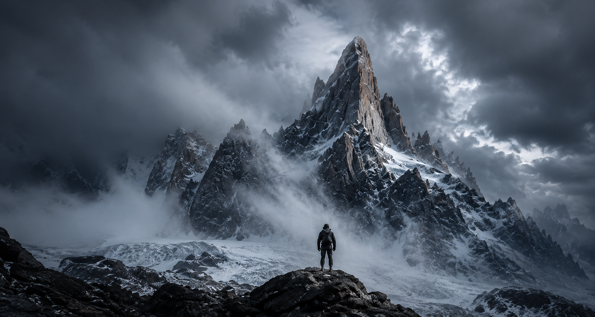
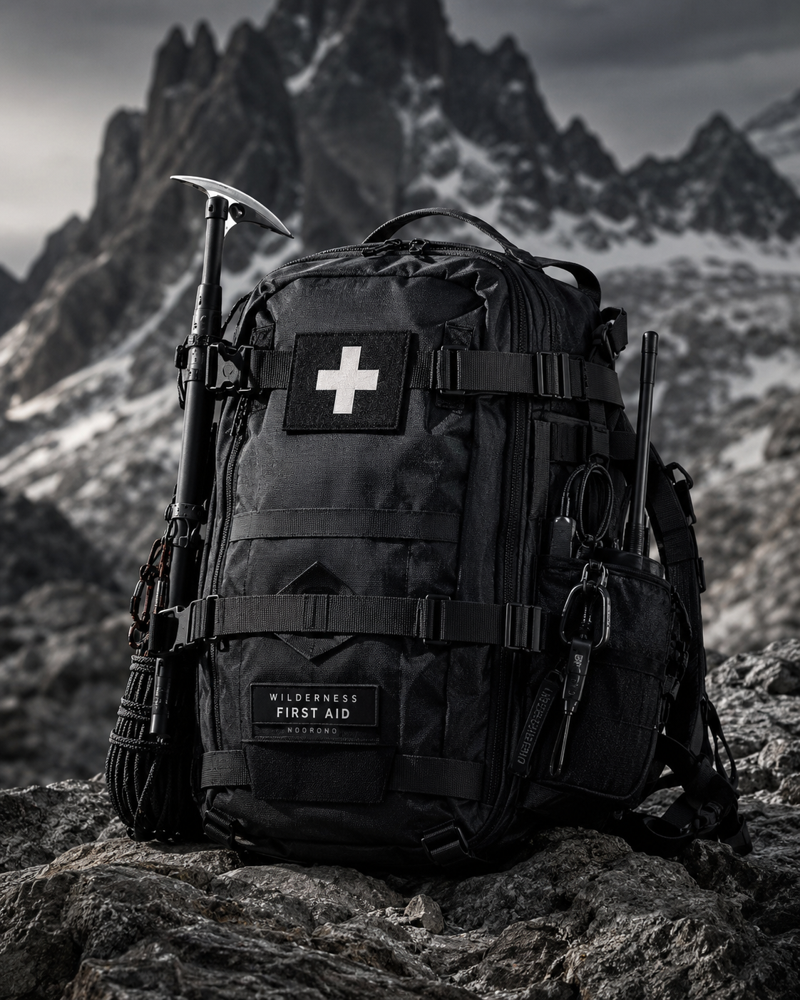

MÓDULO 01
Navegación y Orientación
Lectura de mapas topográficos, uso de brújula y GPS, orientación sin instrumentos y planificación en terrenos sin señal.

Academia de Montaña Patagónica
Formación, entrenamiento y expediciones para quienes buscan desenvolverse en ambientes extremos.
El Territorio No Perdona
Condiciones que exigen preparación, conocimiento y respeto. La montaña no negocia con la improvisación.
Método Cúspides
Sistema progresivo de cinco fases. Cada etapa es prerequisito de la siguiente. Sin atajos.
Diagnóstico físico, psicológico y técnico. Base para el plan personalizado.
Planificación física y mental para resistencia en altura y terreno técnico.
Módulos técnicos: navegación, primeros auxilios y progresión en montaña.
Escenarios reales en terreno para decidir bajo presión y condiciones adversas.
Aplicación de todo lo aprendido. Guía profesional. Protocolos activos.
Módulos de Formación
Lectura de mapas topográficos, uso de brújula y GPS, orientación sin instrumentos y planificación en terrenos sin señal.

Hipotermia, fracturas, evacuaciones de emergencia y triage en condiciones extremas sin acceso médico.

Glaciares, crampones, piolet, anclajes en nieve y roca, rappel, progresión en cordada y gestión de aludes.

Técnicas de campamento en alta montaña, manejo del frío extremo, hidratación, alimentación y descanso en condiciones adversas.

Lectura de frentes, interpretación de partes meteorológicos, ventanas de tiempo, toma de decisión con información incompleta.
En la montaña no hay segunda oportunidad para quien no estuvo preparado.
PROTOCOLO DE SEGURIDAD — CÚSPIDES
Expediciones de Alta Exigencia
No son paquetes. Son expediciones técnicas con requisitos de formación y selección por aptitud.


Seguridad y Protocolos
Cada expedición opera bajo protocolos de gestión de riesgo, comunicación satelital y procedimientos coordinados con Defensa Civil.
Profesionales en Ambientes Extremos
Instructores certificados con experiencia real en rescate, primeros auxilios y expediciones de alta montaña en Patagonia.


Próximamente
El programa de formación profesional más exigente de la Patagonia. Para quienes ya llegaron a la cima y quieren llevar a otros. Selección por evaluación. Veinte plazas por cohorte. No hay lista de espera — hay preparación.
Postulación
El proceso de admisión incluye evaluación física, entrevista técnica y análisis de motivación. Las plazas son limitadas por diseño. No todos ingresan.
CUPOS LIMITADOS — ADMISIÓN POR EVALUACIÓN — 2025